教你炒股票83：笔-线段与线段-最小中枢结构的不同心理意义1
(2007-09-26 21:28:05)
一个最简单的问题，为什么不能由笔构成最小中枢？【韶山映山红】这里没说是1分钟笔，只是单纯的说笔这种结构。】
其实，这不是一个问题。【韶山映山红】所谓不能，不是禁止，而是不合适。】
为什么？因为实质上，我们是可以设计这样的程序，也就是用笔当成构成最小中枢的零件，但这样构造出来的系统，其稳定性极差。【韶山映山红】越低级别的笔中枢稳定性越差，大级别本身也是一个过滤系统，所以越大级别的笔中枢越有参考价值。不只是笔中枢有这样的问题，分型也是，所以日线以上级别的分型也是重要的参考对象。】
众所周知，一笔的基础是顶和底分型，而一些瞬间的交易，就足以影响其结构。【韶山映山红】异动直接影响分型的成立与否，从而直接改变了笔的存在与否。】例如，突然有人打错单，或者有人给老鼠仓送货，那么全天走势的分析就大变样了。【韶山映山红】异动会改变1分钟笔的连接，间接可能影响到线段，也可能改变当天的K线图。】
而由线段构成最小中枢，则不存在这个问题。【韶山映山红】也不是绝对的。极端的异动越来越常见，也会影响到线段分析。】为什么？一个线段的改变，不会因为一个偶尔一笔的错误而改变，也就是说，线段受偶尔性的影响比较少，【韶山映山红】这里说“影响比较少”，而不是没有影响，也说明线段中枢的抵抗力都是相对的。】想想要破坏一个线段的麻烦程度，就知道这一点。【韶山映山红】线段规则从严就能增加这种麻烦程度，但是也会加大线段的级别，使得1分钟中枢更难生成，或者更难升级，加大走势反映的滞后性。】
从心理上看，偶尔因素是允许发生的，只要不被再次确认，就证明偶尔因素对原来的心理合力没有大影响，反过来确认了该合力的有效性。【韶山映山红】“该合力”是“原来的心理合力”。】
所以，线段破坏本身，其实就反应着一种微妙的心理结构的变化。特征序列分型的引入，本质上就是去勾勒这种心理结构的变化的。【韶山映山红】特征序列就是对“原来的心理合力”的抵抗，也包括偶尔因素。】
就像一般的分型，三次的确认才能构成，【韶山映山红】三个元素之间都没有跳空出现的标准分型就是三次确认构成的。顶分型是上攻三次失败，底分型是下压三次失败。】特征序列的分型，本质上也是一样的，【韶山映山红】K线有阴阳线之分，笔没有，而且笔都是连续的，所以特征序列分型都是三次的确认才能构成。】这样的确认，其有效性就极大增加了。【韶山映山红】这个三次的依据是什么？为什么是三不是五七九？头肩形也是三。★以后研究。】由此构成最小中枢的零件，才是合适的。【韶山映山红】缠论的最早期说的初始化条件，最低级别的三根K线重叠即为中枢，就有严重的不确定性，那样的系统实际上只有递归函数，没有初始化函数。】
如果说三个K线的折腾就可以决定一笔的转折，那么一个线段的破坏转折，就需要三个特征序列分型的折腾，这样，市场买卖双方都有足够的时间去反应，【韶山映山红】同时也意味着天生的滞后性，所以线段中枢只适合用来做最低级别的初始化。大资金无所谓这个滞后性。】从而使得体现出的合力痕迹，当然具有了一定的延续性。【韶山映山红】这种延续性其实也就是滞后性的另一面，对它的期待，既可能自我实现，也可能被大资金利用。】
而一个线段，至少由三笔组成，这也使得转折后的新线段，同样可以让合力得到充分体现，【韶山映山红】线段的三笔，实际上只是再次确认。中枢的三也只是再次确认。那么，就是过程只需要再次确认，转向需要三次确认。】
而对比这两个不同方向的线段，买卖双方在相应时间内的心理、实力对比，就一目了然了。【韶山映山红】“这两个不同方向的线段”是转折前和转折后的两个线段。平常说的做的都是同向线段的比较，要留意开始学着做这种不同方向线段的比较。★★★】
更重要的是，线段破坏的两种方式，是有着很大的心理面不同的。
第一种方式，第一笔攻击就直接攻破上一段的最后一次打击，证明这反攻的力量是有力的，再回来一笔，代表着原方向力量的再次打击，但反攻力量抗住并再次反攻形成特征序列的分型，这证明，这反攻至少构造了一个停歇的机会。【韶山映山红】正因为这个停歇的机会，才使得这一次的转折以线段破坏成立的方式被承认。】最坏的情况，就是双方都稍微冷静一下，去选择再次的方向。【韶山映山红】“最坏的情况”既不是站在原线段方向，也不是站在反攻方向，而是站在判断的立场，无法判断方向才是最坏的。最弱的反攻情况是停歇之后被原方向力量一笔打回原形，走势沿原方向延续。最强的反攻情况是原方向到此为止，反攻胜利导致走势就此转折。】而这，就恰好构成了最小中枢形成的心理基础。【韶山映山红】如果形成中枢，说明反攻力量足以阻挡原趋势的力量。唯有出现三买才能体现原趋势还有上攻力量。】
中枢，其实就是买卖双方反复较量的过程，中枢越简单，证明其中一方的力量越强大。【韶山映山红】为什么影响的是复杂简单这个维度？其中一方的力量越强大不是越应该单边走势吗？★以后研究。】
中枢的复杂程度，是考察市场最终动向的一个很重要的依据。一个超复杂的中枢过后，就算一方赢了，其后的走势也是经常反复不断的。【韶山映山红】复杂的中枢使得各方的力量都有很大的消耗，成为以后走势的负担，而且会带来很大的锚定效应。】
【韶山映山红】什么是中枢的复杂程度？三段中枢就是最简单的中枢，延伸或者扩张导致中枢升级，升级的中枢就是复杂中枢。升级以后还继续升级，就是更复杂的中枢。】
而且，在同一趋势中，相邻两中枢的复杂程度、形态，经常有所区别。
为什么？人都有提前量，而提前量，经常就是找最近的模本去抄袭，这样，等于在买卖的合力中，都加了一个提前的变量，从而造成整个结构的变化。
这是一个很重要的原理，所谓不会二次跨进同一条河流，这本质上由人的贪嗔痴疑慢造成的。【韶山映山红】低位复杂高位简单，低位简单高位复杂，这两种形态各有什么特点？以后研究。★★】
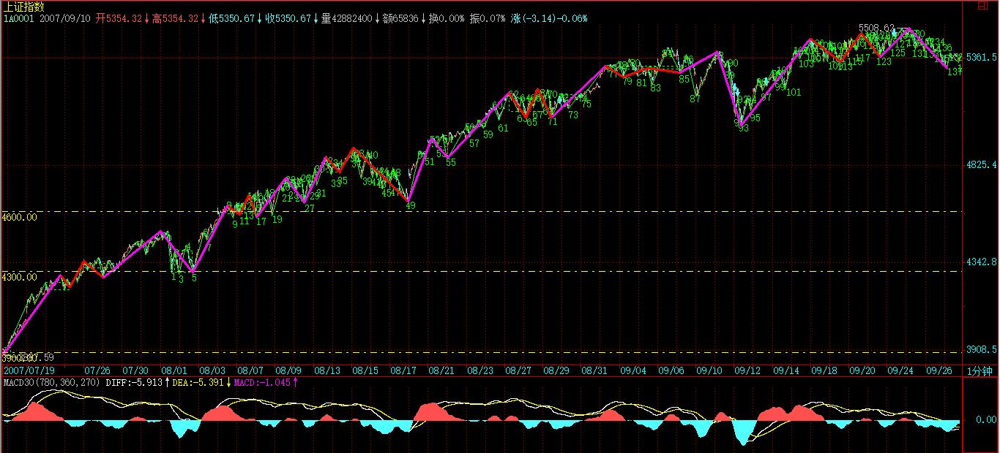
至于线段的第二种破坏方式，本质上是以时间换空间，反攻开始的力量很弱，需要慢慢积累，【韶山映山红】所谓力量很弱，就是没有力量想主动做什么。】这一方面代表原方向的力量很强，【韶山映山红】也不是特别强，否则也不会被反攻了。】另一方面，又要密切关注是否会形成骨牌效应，也就是开始的反攻力量很小，却能迅速蔓延开，【韶山映山红】也可能是原方向的力量在安排撤退。】这往往证明，市场原方向的分力，其结构具有趋同性，一旦有点风吹草动，就集体转向。【韶山映山红】这个趋同性也有可能是高度控盘。】这在投机性品种经常能看到，经常是一个小M头就引发大跳水。【韶山映山红】从另一个角度讲，这种情况下，原趋势的力量其实早已是强弩之末无心上攻，这反而是顶部的信号。】趋同性，如果对于一般性品种来说，往往意味着庄家控盘程度高。【韶山映山红】趋同性也有可能是被算计的一堆散户造成的。】为什么趋同性意味着庄家控盘程度高？★以后研究。】
一些猛烈上涨或下跌的股票，往往甚至由于一个1分钟的小顶分型就引发大跳水或大反弹，【韶山映山红】不是某些力量的撤出造成力量真空引发的吗？为什么先有猛烈上涨或下跌呢？★】其原因，就是这种分力的趋同性所引发的骨牌效应。【韶山映山红】什么样算是引发了骨牌效应？★多杀多、空杀空，】
一般来说，这种第二类的线段破坏，一旦出现骨牌效应，【韶山映山红】“一旦”，也就是说，第二种情况引发骨牌效应也少。】至少要回到前一高、低点范围内，【韶山映山红】“前一高、低点范围”是指原来方向的线段的起步位置。】这就是市场上冲顶和赶底时发生的V字型走势。【韶山映山红】大资金已经退出，小资金也能够撬动大动作。】
分力的趋同性所引发的骨牌效应，基本上就是表现为所谓的多杀多、空杀空。特别在一些大的趋势之后，市场的力量一边倒，如果这时候突然来一个加速，一旦逆转，就会发生典型的多杀多、空杀空现象。【韶山映山红】线段的第二种破坏方式，要等第二特征序列形成新的分型才能判断。什么情况下可以判断开始骨牌效应？★可以做个专题。以后研究。】
叛徒成为叛徒之前，必然是同志，甚至就是同志中的牛人。而最危险的敌人，总是志同道合的所谓同志的背叛，同一阵营内部的塌陷才是最有杀伤力的。无论多头空头，死的时候，沿着那滴血的刀看上去，那双眼睛，一定是你最熟悉的。【韶山映山红】缠师这一段感悟特别具有画面感，市场就是这样。别人是，我们自己也是。】
【韶山映山红】韩太极的博客 《学习3--线段（持续更新中）》 摘录：
线段干啥用？---------线段是“动力”的一种计量工具
有人总是讲，线段是“草”、线段无用、、、、、等等、真是让人无语、汗、、、、、、
笔与线段的意义是什么
1、笔与线段代表着的就是合力的趋势方向！！！。
2、笔与线段能近似代表着合力的力度。
“近似”这个词，讲的就是由于笔和线段的定义的限制，使它不能完全的代表合力的力度！如果还不明白，那试问每次向上0.5个点的5根k线画出的一笔，与同方向的每次向上0.01个点的5根k线画出的一笔，这两个向上笔的力度相等吗？
所以，才有大力度的反向缺口算一段，以及有新笔与旧笔的不同等等附加规则的出现。
而线段的使用，更加接近了这种合力的真实力度！所以，在笔这个零件之后，缠师又加上了线段这个概念！！！这也从另一个侧面说明了为何缠师在62课前不用笔与线段。就因为这个力度没有办法100%的方法完全量化！！！更因为她是真正的想传道，才费尽心血为各位设计了笔与线段！！！才使各位更容易上手应用！！！！
线段的出现是禅师对股价力度进行分类的一种工具或方法，线段背后的深层含义是要体现是股价的动力、力度，作为形态学的线段划分，本质上是为了呈现形态背后的力度。
否则，你不知道那里与那里比较以及比较啥？也不能合理将股票形态分类。
线段的形态是动力的表，背后的动力是形态的魂。
因为线段必须起码有三笔构成，所以线段破坏必须首先是笔破坏！可惜的是，偏偏就出现了第一笔破坏不了的情况，于是才有两种情况的划分。
这就是为什么要从是否是第一笔就破坏还是没有破坏的所谓有没有缺口的情况来区分两种情况的根源
因为线段破坏从笔破坏开始！
一、第一种情况
如果一笔就破坏了，说明破坏的力度很大，这个破坏的第一笔具有很大的意义！所以不能处理包含，因为处理包 含 之后就把力度呈现给破坏了。
这也是第一种情况不用特征序列分型的根源！
第一笔破坏的意义之大，所以后面的走势就看怎么破坏这个第一笔的起点还是终点，这就是多空双方较量的选择结局。
所以，最终通过这个判断是否从第一笔的笔破坏发展出线段破坏，还是原先线段的继续。
二、第二种情况
如果第一笔破坏不了，破坏的力度很小，而原先线段的力量很强。无法从笔破坏发展出来线段破坏，于是只有借助特征序列和分型的思想（其实这个思想是来自于由K线处理笔的思想原理的）。
其目的是刻画在假设的第一笔有缺口情况下---------科学地将后面的走势，凡是与原线段的同方向的笔的力度与和原线段不同方向的笔的力度的比较！
原线段同方向的笔是原线段力量的继续，而与原线段反向的笔代表真正的破坏原先线段的力量！所以，为什么要那样去特征序列，为什么要包含？很明显在有缺口的情况下，其实就是原先线段的力量太强大了，特征序列和包含处理都是为了呈现这种力度。
它让你看清楚了-------与原线段同向的力量，究竟有多大。让人一目了然。
这个坚持了缠中说禅关于形态学本质是反映动力学，能量本质是几何的根本思想，以及走势划分是为了反映走势背后的力度的根本思想。
在有缺口的情况下，如果无法确认假设的第二线段能够破坏第一个线段，那么 ，能找出特征序列的分型，反向的力量足够大，那么，实际上，等于是确认了第三线段破坏了第二线段！
第二特征序列的分型的构成元素是和原第一线段同方向的，是和原先线段的力度一致的，那么，这种元素构成的分型实际上就表明了对原线段力度破坏的有效性，因为分型其实本质就是转折！由和原线段同性质的特征序列元素构成分型，当然就说明原先线段确实在力度和形态上发生转折了。所以，线段确实是破坏了的，这个分型所代表的转折前后确实是有第二个和第三线段的成立。
于是，因为线段传递和破坏的逆时序性，用倒推法，既然第三线段都破坏第二线段了，那么第二线段成立了啊，因此他必然破坏前面的第一线段 。
所以，这里实际是坚持缠中说禅线段必须被线段破坏的原理，也就是走势终完美在线段划分上面的应用。
这是一种“善巧”的方法-------特征序列的分型的本质其实就是确认了第三线段破坏了第二线段！
至于为什么强调第二特征序列的分型的最高（底分型时候）或者最低（顶分型时候）元素不能高于或低于第一线段的结束点呢，其实，也是力度的要求，因为任何走势的划分都是为了呈现走势背后的力度。如果高于或者低于第一线段的结束点，就说明代表第一线段的力量太强大了，而第二特征序列的破坏性意义很小，所以根据动力学这个破坏不成立。
时刻铭记：构成分型的第二特征序列元素代表的力度是和第一线段的力度是同向的。
】
角落的疯
【网文】空头中枢和多头中枢以及中阴中枢
(2012-08-09 12:53:47)
中枢像一个拉锯点，里面包含着多头和空头的拉锯战站，谁赢了朝胜利者那方突破。越是简单的中枢代表多空的力量悬殊。越是复杂的中枢的，证明双方的拉锯力量接近，走势就显得复杂和犹豫不断了。但是让大部分人去区分这个中枢的力量结构到底如何，实在显得太勉强各位了。那么我们再简单化一些，挑出其中特点比较鲜明的中枢来单独用来操作就行了。不需要涵盖所有，毕竟我们的目的是为了赚钱，而不是教书。
看我的标题肯定明白了，空头中枢代表着下跌中继，多头中枢代表着上涨中继。不了解走势结构的人可以看 MACD 来近似区别，就是在 MACD 0轴以上形成的叫做多头中枢，在 MACD 0轴以下形成的叫做空头中枢。而且这类中枢结构肯定没有扩张，就是简单的三笔。有人会问，那么沿着 0 轴缠绕形成的中枢叫什么中枢，自然叫中阴中枢。但是此中阴和缠的中阴又是有点区别的，我这里的中阴中枢如果按照走势结构去划分肯定也能分的出多头或者空头。还是那句老话，一切为了简单方便。中阴中枢一般发生在第一个买卖点之后形成的，背驰之后完全可以走上涨+盘整+上涨或者上涨+盘整+下跌或者下跌+盘整+下跌或者下跌+盘整+上涨。不懂得区分走势能量结构的没必要进去，让市场帮你选择。那么放弃中阴中枢吧。这里用到得概念其实很简单，稍微识字的人肯定都知道的。就是 MACD 双回拉和 MACD 双回抽的妙用。比如 X 股票强力底分上来，在 15 分钟 60 线上形成一个多头中枢，那么后续的力道你们可以随便找股票去验证。很多名博教你们的是一个技术的运用，但是更多时候忽略了教你们怎么辨别股性。而是经常在介入一个技术买点的时候，股票强弱去当下。其中的道理自然是百分之百是对的，但是我注重的是利用率。明明相同的技术买点，比如都是一买后一个走的是中阴中枢，一个走的是多头中枢，为什么不介入多头中枢中，而是要进入不强的中阴去震荡。当然了，差价高手肯定能做出很多的利润，关键是会去别看别人博客学习的能有几个是差价高手。选股重要一只股票的股性也同样重要。其实股性是预先可以分辨出来的，这不涉及预测，而是看走势构成，强的票子都是直接了当的走势结构。为什么会直接了当？原理有两个：1，自然是走势的本身。比如多头中枢通常走一个奔走型中枢。2，就是股票的周期，打个比方，一只好的军队，肯定是有章法可循的，退可守进可攻，冲击力和爆发力肯定是非常惊人的。股票也是一样，有鲜明周期性的股票，往往显得非常直接了当。有人会说，一些股票涨起来不回头，很强势，原因是他没看懂突破之前这只股票逐渐缩小的周期调整。这些后来慢慢说吧，原理知道下就行了没必要深究，既然分类了出来，直接拿去用就是了。
你们完全可以寻找强力底分，拉进自选池，然后在 15 分钟 60 线上看走势结构的变化，发现多头中枢，在小级别介入。连续做一段时间，然后来告诉我还有没有比这个更牛逼的短线技术。如果有质疑的，建议模拟试试。这些东西完全没有脱离缠师的技术范围，只是我把他极端化以及简单化了。复杂的事情我做完了，至于你们还不能接受，我也木有办法了。表达能力就这样。
多空通杀：
再问一下，刚才翻了几个股票，15 分钟的 60 线上的多头中枢，有笔中枢，也有类中枢（在 15 分钟图上不够笔），都有不错表现，我想问下博主，你文中所言中枢一般是指笔中枢吗？
2012-10-30 21:49:03
角落的疯 回复 多空通杀：
对的 我很少看 1 分钟的 没意义 麻烦 大级别一笔一笔操作就行了
2012-10-31 09:16:19
【网文】线段
(2012-02-25 12:06:41)
到目前为止，一切都看来很完备了，不是吗？用分型来表示顶和底，用笔来表示顶和底之间的趋势部分。看起来是这样，但是有一个问题，分型和笔构筑的分类系统太过于脆弱，这种脆弱性来自于前文所分析的，任何一笔都可能被一个简单的分型所终止，甚至被一个疑似分型的K线组合所迷惑。这种脆弱性像天使的翅膀容易被折断，伤不起！
来看这只股票，大禹节水在10年后半段的熊市中最高14.69元到9.25元这段，中间波动很多，如果单纯用分型—笔的系统来指导操作那是要撞南墙的。
那么既然小级别的笔如此不堪一击，有什么办法可以增强稳定性以指导操作呢？缠又为我们指明了革命方向——线段。
线段：至少由三笔组成，而且前三笔必须有重叠的部分。
线段划分定理：线段被终结，当且仅当被至少有重叠部分的连续三笔的其中一笔终结。而只要构成有重叠部分的前三笔，那么必然会形成一线段。线段的形成必然破坏前一个线段，新线段的形成与旧线段的破坏互为充要条件。看明白图会有一个大致的印象。操盘的一个重要目的是发现利用趋势，如果你所期待的趋势只延续了一笔的就被分型所终结，宣告结束，那么这样的趋势只能被证明是一个小小的震荡。由此可以看出线段的价值，线段由至少3笔走势组成，这至少3笔的走势相对于同向的一笔来说，力量要大很多，稳定性也大很多，就不是一个分型能够破坏的了。
一旦一个线段成立，那么就面临持续和破坏的选择。随着走势的发展，线段如果不被破坏，就是一个持续的状态，没有中间地带。因此，线段判断的核心问题就是线段的破坏。
……
【网文】线段的第二钟破坏,从心里层面证明
2016-07-10 14:46
线段的第二钟破坏，从心理意义层面来理解
最近群里有很多人在讨论线段的第二种破坏，我来说说我的看法，有很多人是以图形和几何层面来理解的，也就是用特征序列的分型，这个书里说的很清楚了，我就不多说了，我现在从另外一个角度来说说自己的看法，用心理意义层面来理解这个问题的，给那些迷茫于此问题的缠友，多一种理解此问题的思路。我不敢说自己理解的一定就对，大家就全当看个故事或者笑话吧。
在此先引用第83课的标题和其中一段话：“《笔-线段与线段-最小中枢结构的不同心理意义1》，至于线段的第二种破坏方式，本质上是以时间换空间，反攻开始的力量很弱，需要慢慢积累，这一方面代表原方向的力量很强”。这里可以提炼出来有几个关键词：心理意义，反攻，原方向。下面我就以这三个关键词来来解释这个问题（如图）。
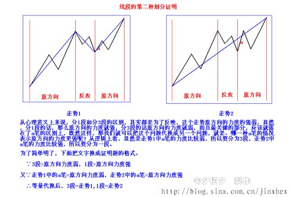
(2007-09-27 15:31:37)
今天的走势，出于对明天大量放出资金的憧憬，走出了应有的回升行情。【韶山映山红】中国神华冻结资金超过2.6万亿元，创下历史新高。此前，建设银行冻结资金最多，为2.26万亿元。以36.99元的发行价，神华能源A股发行将募集资金665.82亿元，突破建设银行580.5亿元的募集资金，成为至今沪深两市A股发行募集资金量之最。】
技术上，昨天特别强调的1分钟结束后的回拉，并没有出现第三类卖点，短线依然继续保持中枢震荡。【韶山映山红】5分钟中枢的离开、回拉，拉回了中枢区间，所以说没有出现5分钟的三卖，依然是5分钟的中枢震荡。】
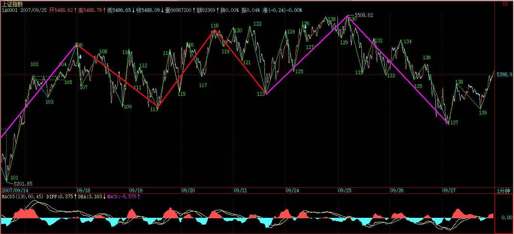
从中线图上看，大盘目前对于多方最大的危险，就是圆顶，因此，多方如果不希望进入温水煮青蛙的境地，就必须至少在节后迅速突破站稳5500点，否则，这圆顶成立的可能性将极大增加。【韶山映山红】迅速再创新高、并站稳。】
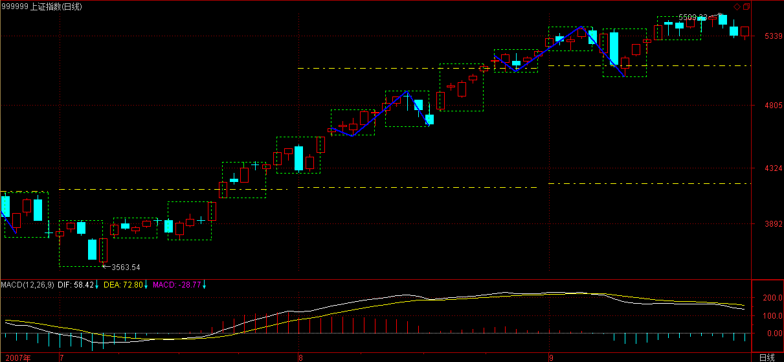
从资金与政策的对赌看，资金面取得了决定性的胜利，今天，建行成为多头利器，宣布，以增加所谓蓝筹进行调控的思路彻底失败。目前资金的宣言就是：你来多少，就提供多少拉抬的武器，只要你还是市场调控，有钱就敢顶风搞。
本ID在前面已经明确说过，这资金和政策的对赌，最终的结局，一定是政策举起大棒，而资金这种行为，也无可厚非，资金就是这样的，连权证的末日轮都可以搞得热火朝天，这样的形势下，资金又有什么不可赌的？
中字头、题材股，两只蝴蝶忽悠着飞，能飞多远是多远，管他明天是仙还是灰。
明天最后一天，就看解冻的资金能忽悠进来多少了，这个越来越向30分钟靠的震荡什么时候结束，看图就知道，第三买卖点。【韶山映山红】中国神华冻结资金超过2.6万亿元，创下历史新高。此前，建设银行冻结资金最多，为2.26万亿元。以36.99元的发行价，神华能源A股发行将募集资金665.82亿元，突破建设银行580.5亿元的募集资金，成为至今沪深两市A股发行募集资金量之最。】
希望这个游戏能延长的时间越长越好，钱是靠折腾出来的，要折腾，哪会没风险？只要看好你附近的刀和那一直在头上的大棒。
今天很忙，下午去看一公司，晚上还有一个会，晚上的帖子可能很晚，明天早上看也一样的，别影响休息。
先下，再见。
(2007-09-27 23:18:00)
对不起，刚回到家。今天不错，发现一个特别好的企业，看来中国的企业真是藏龙卧虎，这也是中国20年大牛市真正的基础。
好了，回来太晚，就不写什么帖子了，把本ID写的《子夜歌》-步韵宋（南朝）《子夜歌》四首贴上来。
【韶山映山红】《子夜歌》是南朝民歌吴声歌曲中的一支。相传是晋代女子子夜所首创，故名。南朝民歌盛于南北朝时期，在中国文学史上留下了华彩的一章。南朝民歌大部分保存在（宋）郭茂倩所编《乐府诗集·清商曲辞》里，主要有吴歌与西曲两类。】
【韶山映山红】子夜歌，乐府曲名，现存四十二首，收于《乐府诗集》中。以五言为形式，以爱情为题材，后来延伸出多种变曲。】
【韶山映山红】《子夜歌》：始欲识郎时，两心望如一。理丝入残机，何悟不成匹。】
【韶山映山红】《子夜歌》：高山种芙蓉，复经黄檗坞。果得一莲时，流离婴辛苦。】
《子夜歌》
-步韵宋（南朝）《子夜歌》四首
缠中说禅
一
月没风不起
侬心竟何当
夜夜长不寐
怕见梦里郎
二
春雨云外山
秋风江上渚
风雨两回眸
回眸偏是汝
三
行行复行行
行行无一事
不折雪夜梅
不寄相思意
四
侬心金石心
侬情冰雪情
金石化明月
冰雪照月明
风雨两回眸
回眸偏是汝
2008-7-12 11:27
粤语还是有古风，正好在听 陈慧娴粤语版的:人生何处不相逢
和得上这子夜歌。
只是简体字版的歌词，文采差多了，
而粤语婉转缠绵，似懂非懂间，古意柔情 随风飘荡。。。
陈慧娴:人生何处不相逢
版本:粤语
歌词:
曲:罗大佑词:简宁
随浪随风飘荡
随著一生里的浪
你我在重叠那一刹
顷刻各在一方
缘份随风飘荡
缘尽此生也守望
你我在重望那一刹
心中有泪飘降
纵是告别也交出真心意
默默承受际遇
某月某日也许可再跟你
共聚重拾往事
无奈重遇那天存在永远
他方的晚空更是遥远
谁在黄金海岸
谁在烽烟彼岸
你我在回望那一刹
彼此慰问境况
随浪随风飘荡
随著一生里的浪
你我在重叠那一刹
顷刻各在一方
缘份随风飘荡
缘尽此生也守望
你我在重望那一刹
心中有泪飘降
纵是告别也交出真心意
默默承受际遇
某月某日也许可再跟你
共聚重拾往事
无奈重遇那天存在永远
他方的晚空更是遥远
谁在黄金海岸
谁在烽烟彼岸
你我在回望那一刹
彼此慰问境况
2008-7-12 11:36
不过没小缠的洒脱
缘分尽了，各自了之。。。
2008-7-12 11:37
(2007-09-28 15:51:59)
昨天已经明确说了，资金取得决定性胜利，而资金最大的技术危险是圆顶，最迟在节后必须破掉。
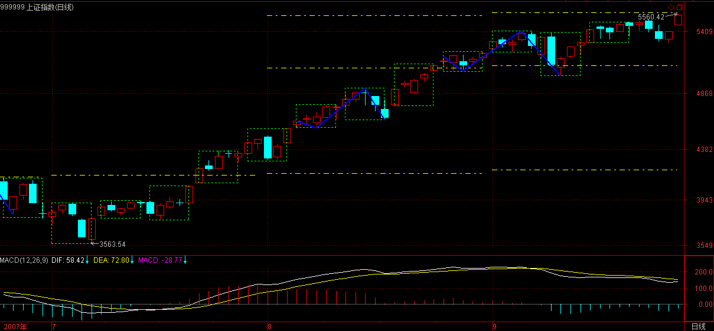
而今天关于房地产的利空，反而成了股市资金面的大利好，【韶山映山红】为加强商业性房地产信贷管理，稳定住房价格，央行和银监会昨夜联手下发了《关于加强商业性房地产信贷管理的通知》。通知规定，对已利用贷款购买住房、又申请购买第二套（含）以上住房的，房贷首付比例提高至40％、贷款利率不得低于央行同期同档次基准利率的1.1倍。并且，贷款首付款比例和利率水平应随套数增加而大幅度提高。具体提高幅度由商业银行根据贷款风险管理相关原则自主确定，但借款人偿还住房贷款的月支出不得高于其月收入的50%。】资金这时不发力，那是脑子有水了。因此就上演了一场乘胜追击，破圆顶兵临3/4线的好戏。【韶山映山红】9月1/2压力线4189点，9月2/3压力线5109点，9月3/4压力线5569点。】
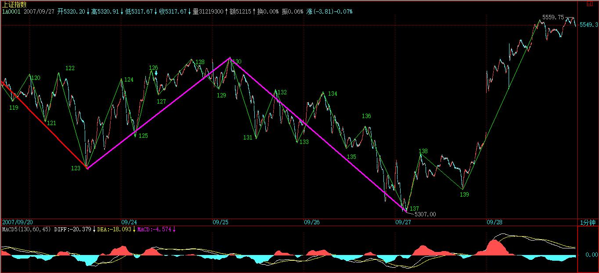
注意，本ID已经说过了，在刀锋上舞蹈阶段，是多空皆杀，那些一根筋思维的人，注定要被杀，目前不被杀只是迟早的问题，某种模式反复后，就是相信这种模式的人的死期。
本ID什么都不相信，市场让本ID看到什么就干什么，这就是本ID理论的唯一中心与基本点。例如下图中，132的第三类卖点后，【韶山映山红】132是谁的第三类卖点？看上去应该是126-130这个中阴中枢的第三类卖点。★以后研究。】
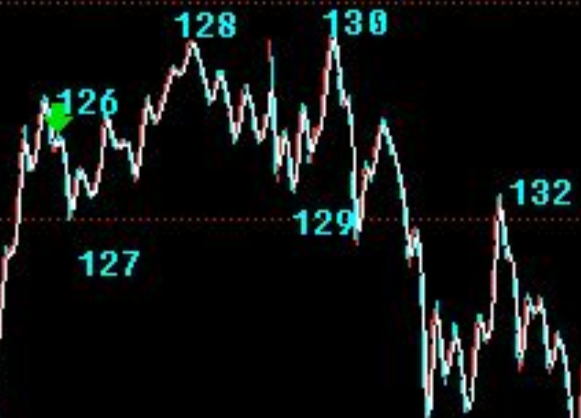
【韶山映山红】从现在得到的历史数据看，132高过127，也涨破了129，不构成第三类卖点。】
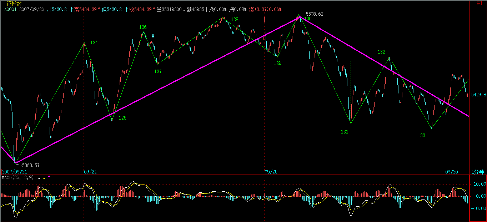
到137的1分钟完成，走势极端标准完美。
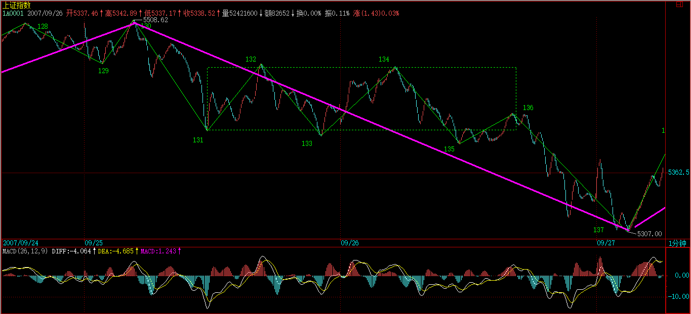
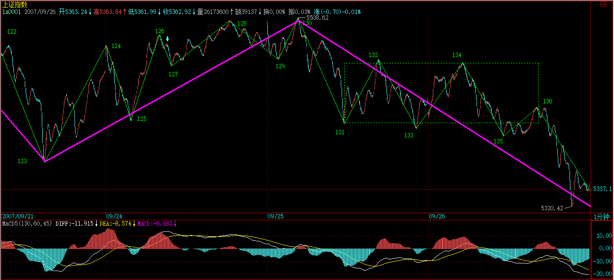
有兴趣的可以量一下130-131，与136-137，长度基本相等，而力度上，加一下下面对应的柱子面积就知道该干什么。
而到了138，就知道这5分钟的第三类卖点肯定没戏了，【韶山映山红】138高过了5分钟中枢的ZD点115。】
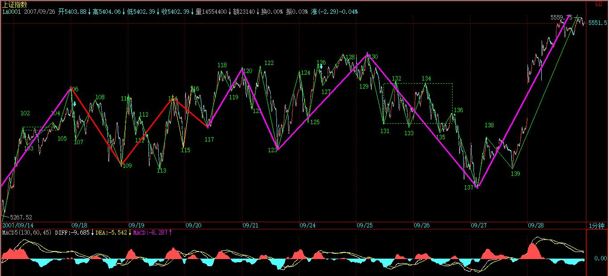
就算137没反应，139就提供了一个反应的机会。【韶山映山红】137没有1分钟级别的背驰，小转大的反弹，139二买并不可靠。但是138反弹回5分钟中枢了，这样就增加了139二买的可靠性。】
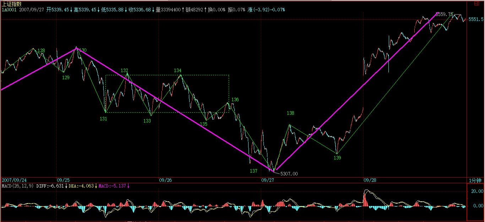
当然，站在中枢震荡的角度，并不需要预测后面能走多高，让市场告诉你。而今天的走势，强悍到连一个线段都没破坏过，那该干什么还不是很清楚的事情？
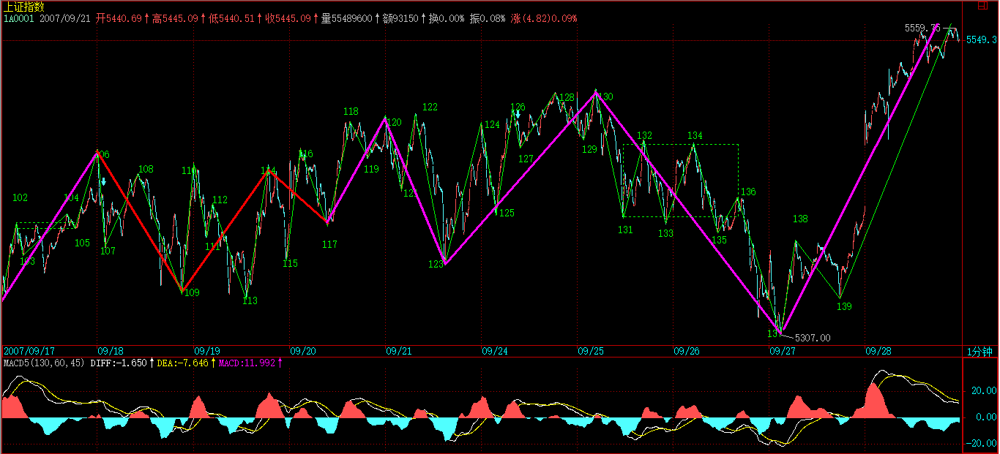
节后的走势，十分清楚，就是首先要完成这个1分钟的离开，从目前的情况看，这1分钟的离开走势是首先是线段的类上涨的可能性太大了，除非有特别的大消息，当线段类上涨结束后，必然形成1分钟中枢，该中枢后，1分钟的走势无论是盘整还是上涨，等1分钟走势完成后，关键是看反抽能否形成前面5分钟中枢的第三类买点了，如果形成，大盘将继续攻击上行，否则就继续向30分钟中枢的震荡陷进去。
好了，上面的分析已经十分明确，对本ID理论有点了解的，都应该明白了。至于不了解的，本ID已经反复说过，中线点的就看5周线，你看，昨天的低点，就刚好在上面，和上次5000点那次一样。
基本面上，很明确地告诉各位，节后最可能出来的消息，就是关于国有股部分划转社保的问题。关于这个消息，本ID和周围的人都有点分歧，这消息意味着，以后卖国有股，就不需要什么通知了，想什么时候卖都可以。但，目前资金充沛，完全有可能出现如此尴尬的事情，就是见一只买一只，全给买光了。毕竟那些国有股都是中字头的，都是中国最好的企业。所以，对这政策的杀伤力，本ID依然表示怀疑。不过，最终要看市场的反应，本ID自己不会有什么太多想法，只关心市场合力本身。
要打跨资金，政策上可能有效的招数有：一、查基金黑幕；二、规定A股流通量不到10%的必须到10%。三、XXXX。
政策必胜，这是无疑的。但本ID对资金与政策都没兴趣，本ID唯一感兴趣的，就是利用他们两者斗法所制造的市场机会去多空皆杀。
个股方面，没什么可说的，中字头、题材股，两只蝴蝶继续忽悠着飞。只要掌握好节奏，就是操作的天堂。如果不明白什么叫节奏，请各位做一作业：从日分型到小的级别走势，好好分析一下000938，里面全部都是教科书。【韶山映山红】000938紫光股份。可以做一个专题，以后研究。★★★】
放假了，让股票豆腐去吧。
本ID今晚再写一帖子，明天就要外出腐败腐败了，博客关闭到10月7日。10月8日重新开张。
祝各位过节好。
先下，再见。
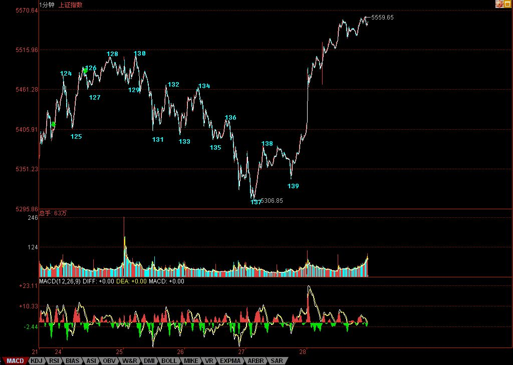
这世界奇怪的人依然到处都是
比如楼上这个什么秋刀
自己学不明白的东西就认为是理论有毛病，更奇怪的是就认为天下人都是如此猪脑子
用小缠新帖流行说法是：
鼻子上插上大葱满世界晃悠，但学习不是插上大葱就好使的，您还是回圈去吧
2008-3-11 00:52
(2007-09-28 20:06:56)
内部装修
停业九天
特此公告
见见之时，见非是见。
这里的见，当然不单单说的见，包括任何六识范围里的东西。你的所见、所闻、所想、所感、所味、所嗅，一切的东西，都是不可信的，都是不可依赖的。
有人喜欢坐在那里见这见那、感觉这感觉那，都是无聊游戏，千万别相信。
一个最简单的判断标准，你见的东西，死的时候在吗？如果不在，那就假的；你见的东西，睡觉的时候在吗？419的时候在吗？贪嗔痴疑慢爆发的时候在吗？如果不在，都是瞎掰。
题目所说的，就是打坐中一个最基本的原则，任何与六识相关的东西都是不可留恋的。有任何的留恋，都不过是自造恶业。
真相往往都是残酷的，就算你动一下念，都是在造业。口业、身业、意业，所有人的命运与境遇，都是自造其业。
当然，业有善业、恶业。但即使是善业，一旦迷恋其中，也就同时种下恶业的种子。
因此，打坐，必须首先要有其正念。
何谓正念？就是不着一念，连不着一念这一念也不着。一切的念头，包括六识中任何相关的东西，都不着。
不思善，亦不思恶，不思亦不思，这样，才有点相应的样子。
但更重要的是，不着一念，但必须念念分别，否则就是大昏沉，而昏沉，实际上还是一念，只是你完全沉迷进去而不自知。而昏沉这一念也要分明，这才有点象样子。
有人说，那我完全空了，这总行吧？难道你那所谓的空就不是一念？
很多玩嘴皮子的，连那一念的空都没空过，那就更不用说了。
有人问，打坐可以不着一念，那不打坐的时候，怎么可能？例如，要工作、要生活，总不可能无念吧？这又是一个天大的错误。打坐、不打坐，那自生的分别，难道不是一念？你还有着打坐不打坐的自生分别，又如何是不着一念打坐呢？你的打坐，还有出入，那不过是无聊把戏。
有人说，那太难了，怎么可能？为什么不可能？你自己从来都是不着一念的，任何人从来就是不着一念的。就算你以为自己着了这念那念，当你死的时候，就知道那念这念从来没着过你，你不过是自作多情而已。
你本解脱，无须什么解脱。但如果你真觉得自己本解脱无须解脱而如何如何了，那才是大的束缚。
现代人，是承受不住你本解脱的，所以本ID可以换一种说法，看看你是如何被绑的。
绑住你的，无非是这几层东西：一、所有的社会关系。二、你的身体。三、你的思想。四、你生命的生死。
所有的社会关系，构成了人最外围的东西，这层东西，如同戴着一个面具。这个面具，必须符合社会的规范，否则就会受到社会的惩罚。
有些人觉得，在这里面钻营，没意思，所以就自返所谓的内心，求所谓内心的平衡，得所谓的修养，换所谓的清名，被人称为所谓的高士，这种人，不过是另一种的糊涂蛋，和在所谓社会关系中钻营者没什么区别，而且甚至更坏。
在第一层次上钻营的人，道德上会受到极大的不信任，这些人都很难有什么好名声，所以骗不了什么人。而那些所谓的高士，自己还是糊涂蛋，用所谓的学问、清名去蒙骗人，自种恶业而不知。求利、求名，都不过一丘之貉，实际上都是在第一层次上混。现代人中，1亿个里，大概99999999个都属于这一种。
当然不排除现在还有这种人，抛弃一切名利权色，到深山里苦修，企图通过身体上的一些把戏，摆脱点什么，得到点什么，成仙成佛。这类人，已经完全摆脱社会关系的束缚，但摆脱不了的，是自己的身体。
以上两种，归根结底，摆脱不了的，不过是自己的思想。所有的思想，其结构都是一样的，就是要肯定点什么，例如，身体、权名利色、批判精神、上帝的爱、诸如此类，说白了，都不过人的贪嗔痴疑慢。
能摆脱一切社会关系、身体、思想，但你依然摆脱不了生死。所有的人，本质上不过在这里四重大网里苟延残喘，生来死去，永无了期。
其实，你根本不着一丝一毫力气，就可以破掉这四重大网，但现代人如此愚痴，还是必须一重重地来。
站在你的身体的角度，一切社会关系，就属于外在的。如果把你的身体当成一念，那么一切社会关系的变动，就是纷纷扰扰的无穷无尽的念念相缠，将你那身体的一念踢来踢去，从中永无尽头。
同样，你的思想与你的身体的关系也一样，把你的思想当成一念，那你身体的血液、内脏、阴神阳神，五官、脑电波，基因，诸如此类，都构成了纷纷扰扰的无穷无尽的念念相缠。
很多所谓的大师、上师，教人守着或不守着身体或其部分，去看什么念头，完全的胡搞。还有教人内视、外视，这听那听的，也同样是胡搞。
无论你的身体还是思想，站在生死这一念上，都不过是纷纷扰扰的无穷无尽的念念相缠，顶个屁用。
现代人，还是一步步来。先把社会关系这结打开，否则，有人捧一下你就飞起来，有人骂一下你就眼睛突起来，天天为这为那去折腾，到头来不过是竹篮打水。看清楚这一切，把这纷纷扰扰的无穷无尽的念念相缠的游戏给看破了，注意，不是要逃离，而是要游戏其中，游戏其游戏，于游戏中而自由、而解脱。
顶礼所有骂你害你捧你成全你的人，所有这一切不过是游戏的一部分，不能透过这一切，就根本不可能于游戏中而自由、而解脱。于此而自由，则不昧其业，不系缚其中，如风行水、雁过空。
应该为所有骂你害你的人祈福消业，其人愚痴，生此恶业，应将自己所有的福报与善业回向这些人以及一切法界众生，让他们恶业永消，终得智慧而永脱轮回。
注意，这里不存在任何谁比谁高的想法，人人是佛，没有谁比谁高，只是是否被系缚其中，被贪嗔痴疑慢所转。你被游戏，就被贪嗔痴疑慢所转所系；你游戏，就转贪嗔痴疑慢而成就。业之随身，历生死而不可解，于其中做口业、身业、意业，生死而流转，痴人不惧，而因果报应不爽。
谈到因果报应问题，这是现代人绝少相信的。但，这也如同太阳，你爱信不信，明天该升起来也就谁都挡不住。
于社会关系而自由，同样道理，要于身体而自由、于思想而自由，于生死而自由，这四重网要一一解开。
所谓自由，是不离系缚而自由，不离烦恼而自由。那种企图逃离系缚的正是大系缚；逃离烦恼的正是大烦恼。
[匿名] 不想飞
上来看看缠姐姐，节日快乐！
对于众多佛理争论，无一语可批，无一言可赞。
2007-9-30 15:50
[匿名] 乐土
不想飞:政策面已不容沽.谨慎.
夜雨:坚持长线之路,_好.也多教大家一点短线技术,也是对缠理的一种高级理解之一.
SDF:你的留言看起来有一点点道理或在思考状.但我确实很怀疑.因为你以你目前所处的环境在思考?别介意:我不知您目前的状况.特别是物质方面的.更别介意:当物质方面还没相对自由时,能在精神方面有一些自由,确是让人羡慕.
各位新学友:良好的心态比走势必完美理论更重要.
乐土:先练心态,兼学走势必完美理论.
8-10日後见．
2007-10-1 02:05
[匿名] 不想飞
匿名] 乐土
不想飞:政策面已不容沽.谨慎.
====
先谢谢乐土。我权证上面的成本均为负值，关于政策面上变动，我有预先设铺的应对之策，只要不永远停止交易，我的损失都不会太大。不管怎么样，还要再次谢谢你的提醒,同祝：节日快乐！
2007-10-2 09:29
[匿名] 不想飞
所谓自由，是不离系缚而自由，不离烦恼而自由。那种企图逃离系缚的正是大系缚；逃离烦恼的正是大烦恼。
＝＝＝＝＝
缠姐姐这好难哦。自由，先自己而自由。没有上天入地，惟我独尊的心怀是做不到自由的。这游戏，非众游戏；这游戏，游天地戏万物，不是人人都能游戏的，能游戏的人也没几个啊。太难太难了！
2007-10-2 10:00
[匿名] 新浪网友
石猴:发表于 2007-9-30 14:41
在小缠的理论里级别是个非常重要的，根基性的概念之一，但在课程里提到的级别，尤其这几课说的级别和从线段开始的级别不是一回事！
先说第一种级别，就是在这十课以后常讲的级别，是按k线图的级别划分的，比如日线的第三买点，30分的第一买点；实际这些只是在30分图上，在日线图上看到的买点，和30f，日线级别的买点不是一个概念；
这就说到了另一种级别，就是现在每天在讲的1f，5f这些级别。
因为都是用1f图来讲解大盘。所以很多人就认为5f图上能看到的中枢就是5f中枢，这是大错特错的，有可能30分图上看到的中枢都只是个1f中枢。
gewei188:另外想请教一下关于级别的定义，是不是在某级别图上用笔和线段方式划分出的线段就是该级别图的次级别，而三条线段形成的中枢就是本级别的？比如5F图上找到的线段就是1F的，3条1F线段形成的中枢就是5F的？虽然我学缠论还没入门，但我也敢肯定这种理解肯定是错误的。以缠对这个理论构建的严密性的追求，怎么可能对同一个概念搞出两套体系，而且还是互相矛盾且不可替代的，这绝对是不能容忍的。
关于级别，其实我觉得从一开始就不是一个非常严格的概念，只是缠用来研究走势的一个方法，也是一种很自然的研究方法，就是在某个级别上，可以忽略该级别以下的波动，便于抽象化。至于某个中枢是属于5分钟还是30分钟，确实不是非常严格，比如如果我们的级别划分只有1分，30分，日线。。，那么三个1分钟走势重叠的部分就是30分钟的中枢，而如果我们分得更细，分成1分钟，3分钟，5分钟。。。，那么1分钟上面的级别就是3分钟级别的。所以我觉得缠的课程中对级别的描述可能前后有不一致的地方，但只要在同一个分析中，各个级别的高低层次不搞错，是不会影响结果的。
我觉得这个问题真的很有必要请缠直接解答一下，否则如果只是她自己的一些疏忽，却还得我们在这里创造各种理论去圆她的错误，导致对缠论的理解和应用上出现偏差，那就问题大了。
请博主明示．
2007-10-2 11:59
[匿名] 不想飞
好好习习天天向向
81课说：“看行情的走势，就如同听一朵花的开放，见一朵花的芬芳，嗅一朵花的美丽，一切都在当下中灿烂”，是否应改为“看行情的走势，就如同听一朵花的开放，嗅一朵花的芬芳，见一朵花的美丽，一切都在当下中灿烂”
====
这可不能改哦，意境相差，境界也相差的。如果用你改的，那看到的，听到的，嗅到的都是平常表面上的功夫。可姐姐她做到是，不可听的听到的，不可见的见到的，不可嗅的嗅到的。这一比境界高低就出来的。
2007-10-2 21:29
[匿名] 不想飞
[匿名] 新浪网友
关于级别，其实我觉得从一开始就不是一个非常严格的概念，只是缠用来研究走势的一个方法，也是一种很自然的研究方法，就是在某个级别上，可以忽略该级别以下的波动，便于抽象化。至于某个中枢是属于5分钟还是30分钟，确实不是非常严格，比如如果我们的级别划分只有1分，30分，日线。。，那么三个1分钟走势重叠的部分就是30分钟的中枢，而如果我们分得更细，分成1分钟，3分钟，5分钟。。。，那么1分钟上面的级别就是3分钟级别的。所以我觉得缠的课程中对级别的描述可能前后有不一致的地方，但只要在同一个分析中，各个级别的高低层次不搞错，是不会影响结果的。
我觉得这个问题真的很有必要请缠直接解答一下，否则如果只是她自己的一些疏忽，却还得我们在这里创造各种理论去圆她的错误，导致对缠论的理解和应用上出现偏差，那就问题大了。
请博主明示．
＝＝＝＝
关于级别这个问题我还是可以回答下，姐姐其实也说的很清楚的。走势的级别一分也好，五分也好，３０分也好，这些名字都不重要，重要是我们目前所用到的东西，也就是说于当下与我们发生关系的，我们与这个形式的东东发生当下关系。那我们就拿当下与我们发生当下关系的东东当做一个标准。就像我们目前当下用的时间年、季、月一样，当下我们是以这个为标准，一年有四季，四季有三月，那么它们是级别属于递归关系。走势中的级别也可以这样一个递归关系，我们用一分图看（等于上面说的时间关系），最小级别用一分的，那么比一分更大的级别用相应的量递归。同理你按五分图，还是３０分图，都相应当下发生关系的为标准在进行递归。（在这里有时间的关系，其中可放大或缩小。）
也可以简单的用这么一说，把走势的级别分为武功中的一重两至多重，那么一分图中的一分中枢定为每一重，也就是三个一分图一分中枢的重叠的量递归构成的第二重的要求，一直这样递归上去。当然你用５分图也好，３０分图也好，你要把这一重两至多重的名字取成什么样都无所谓，重要是重重递归关系。
2007-10-2 22:03
现代人，还是一步步来。先把社会关系这结打开，否则，有人捧一下你就飞起来，有人骂一下你就眼睛突起来，天天为这为那去折腾，到头来不过是竹篮打水。看清楚这一切，把这纷纷扰扰的无穷无尽的念念相缠的游戏给看破了，注意，不是要逃离，而是要游戏其中，游戏其游戏，于游戏中而自由、而解脱。
顶礼所有骂你害你捧你成全你的人，所有这一切不过是游戏的一部分，不能透过这一切，就根本不可能于游戏中而自由、而解脱。于此而自由，则不昧其业，不系缚其中，如风行水、雁过空。
2008-3-11 21:10
如果把你的身体当成一念，那么一切社会关系的变动，就是纷纷扰扰的无穷无尽的念念相缠，将你那身体的一念踢来踢去，从中永无尽头。
同样，你的思想与你的身体的关系也一样，把你的思想当成一念，那你身体的血液、内脏、阴神阳神，五官、脑电波，基因，诸如此类，都构成了纷纷扰扰的无穷无尽的念念相缠
2008-11-5 17:06
(2007-10-04 15:18:01)
旅途中收朋友四言诗，步韵一首转发上来，7号回京装修验收。
各位安好，再见。
步友四言四韵
缠中说禅
斵绿绮琴
温青田酒
一咏一觞
奉兰亭友
子奇弱冠
冯唐皓首
低昂相与
风雨曩旧
(2007-10-07 09:55:19)
装修完工
重新开张
上面说了正念，现在说正信。信，大致上有两种：一、闻信；二、证信。人生在世，基本都在闻信状态。从最初的教育到日常知识的获得、理论的研讨，归根结底，都不离闻信。
有人可能要说，那么如果实践去检验了，那是否还是闻信？其实，这依然不离闻信。因为，任何时间检验的东西，有一个基本的前提，就是观察之于观察者与被观察对象的所谓同一问题。
一个很简单的例子，例如，你看到天上的太阳，他也看到天上的太阳，你们两人之间是如何证明这两个不同人看到的太阳是同一的太阳？或者说，在探讨同一性问题的前提首先有一个同一性的假设。这个同一性的假设就是，两个不同的人的观察的基本前提是同一的，或者说是有着同一的起点。一个最基本的前提，是假设两个人的可观察的基本生理结构是一致或同构的。但是，又有什么观察能决定两个个人的可观察的基本生理结构是一致或同构的？显然，这里就涉及一个前提无限倒退的问题。
那么，为什么所有的人都相信，只要是人，其观察的基本结构前提就是一致的？因为闻信。人构成的社会共同体的灌输，使得每一个人都闻信地相信，人和人观察的基本结构前提就是一致、同构的。
人类的所有文化、哲学、艺术、科学、习俗、把戏，都不过从这个闻信的基础开始。所有的人，不过都是盲人，去摸一只像，但和通常所说的盲人摸象有点不同，或者是因为这像是一头怪象，鼻子和腿或是身子、耳朵都长得一模一样，因此什么盲人摸都得出同样的结论，因此所有的盲人就都宣称，我们摸的东西是同一的，我们去的摸也是同一的，我们是同类，我们如何如何；或者，所有的人，在发生摸像这个动作的时候，都出现同一的怪病，摸到不同的鼻子、腿、身子、耳朵，感觉都被突然同一了。这就如同，在计算机程序了，放了一条绝对的转向指令，一发生摸象这动作，就绝对地转向同一输出。但这个程序中无聊的绝对转向指令，可能只是一个黑客的恶作剧，就如同所有人的死，不过是一个无聊的绝对转向恶作剧，其实，哪里有什么死的绝对转向。
死，不过是一种病毒感染而已。但当这种病毒被无限传播后，所有人都闻信地相信，死是绝对的，是不可解毒的。更可笑的是，这个病毒的编写者与传播者，就是每个人自己。而生，是另一种病毒感染。这病毒、那病毒，其实哪里有什么病毒，自生分别而已。
同样，你听说有佛，然后就产生的信和不信的反应。但无论信还是不信，都不过是闻信地信或不信，不过都是说食而已，岂是真食？所谓号称自己信佛的人，其实和所谓号称自己不信佛的，都一样，就如同两个根本没吃过佛跳墙的人，在争论佛跳墙究竟的色香味，都不过是说食之辈。
三人成虎，人类的所有文化、哲学、艺术、科学、习俗、把戏，都过是三人成虎而已。有时候，一些不同的N人构成子类后，就成出不同的虎，形成不同的学派、学说、理论、阶级、利益，然后互相攻击、撕杀、折腾、批判，忽悠，诸如此类，不过如此。
闻信，归根结底就是迷信。科学，同样是一种迷信。无论是假设观察的可重复性与同一性基础，还是假设可证伪性的可证性，都不过是一种闻信地迷信罢了。人类社会的所谓发展，不过是一个个迷信的破除然后又一个个新迷信诞生过程而已，如果说，曾经的地球中心、太阳中心，变成物质中心、宇宙中心、人类中心、自然中心，是一种迷信的延续、变种，那么有一个不变的中心从来没变过，就是自我的中心，一切不过是那个“我”的无聊把戏而已。
所有闻信、迷信，一个最基础的结构，就是以“我”信为基础，而这“我”信，又非从“我”而得，而是从非“我”而得。最大的闻信、迷信之一，就是这闻信、迷信的“我”所裂分出来“我”与“非我”的二元结构。有一种最可笑的闻信与迷信，就是把“我”大而化之，搞出“大我”、“无我”的无聊把戏，似乎“大我”、“真我”、“无我”以后，这“我”就忽悠大了，忽悠无了，就世界了、就宇宙了、就真理了。“大我”正是“我”之至小，“真我”正是“我”之大假，“无我”正是“我”之有根，所有修炼、寻找所谓“大我”、“真我”、“无我”的把戏，都是所有把戏中最恶臭、腐败的无聊玩意。
如果有人让你信佛，那这人肯定是大恶魔，为什么？无佛可信，可信非佛。如果你就是佛，又有什么佛需要你去信？如果你不是佛，你信的都是闻信、迷信，你信的所谓佛都是臭狗屎。
佛魔最难除，佛就是最大的魔怪，见佛必杀，杀尽所有佛与非佛，才有证信的样子。而证信又何曾有样子，佛且不证、何况非佛？佛且不信，何况非佛？不证不信，是为证信。
有人问，那些没有信仰的、杀人如麻的，难道就是不证不信？难道就是证信？且慢，你说那些没有信仰的、杀人如麻的，哪个没有信仰，哪个不证着点什么？信着点什么？有信仰、没有信仰，都依然是闻信、迷信，非佛尚不能透过，何况佛魔？
有人问，人要在现实中生存，怎么可能不证不信？时间、宇宙、历史、现实的一切，都不过是闻信、迷信的共业制造的空中楼阁，被此闻信、迷信共业牵引，而生幻业相续相缠，由此而被游戏，透过此，才能不生生、不死死而游戏其中。
有人问，不证不信，是不是要成仙、或者把自己的一切感觉、见闻灭掉？问这种问题的，都是痴人。佛犹不成，成什么破烂神仙？神仙难道不在六道轮回里？而即使你灭尽见闻觉知，犹是闻信、迷信中，犹是自生影尘分别。不证不信，不生不灭，不出不入，又有什么需要灭、需要出的呢？
[匿名] 新浪网友
混沌操作法与禅论
不得不说的是，本人被禅论所吸引更主要是因为禅主在其博文中大胆、泼辣的行文风格。对禅论粗看了一下，发现其理论的思想、结构以及操作规范与前些年出的一本书非常相似，书名叫《证券混沌操作法》，作者是比尔.威廉姆斯，翻译人是黄嘉斌，出版单位是科文（香港）出版有限公司。
非常有趣的是，中国的禅学都对两者中有重要的指导、启发意义。
二者都不约而同的提到“分形几何”、“MACD的背离运用”。
我有点闹不明白的是，到底是禅论是参考该书而来，抑或反之？
有兴趣的禅友可以找到这本书好好研读。
2007-10-7 12:50
本课目录
教你炒股票83：笔-线段与线段-最小中枢结构的不同心理意义1【网文】空头中枢和多头中枢以及中阴中枢【网文】线段【网文】线段的第二钟破坏,从心里层面证明新蓝筹成多方利器，市场调控彻底失败。《子夜歌》-步韵宋（南朝）《子夜歌》四首资金乘胜追击，破圆顶兵临3/4线教你打坐10：不要相信任何你能看到想到感觉到的步友四言四韵教你打坐11：何谓正信